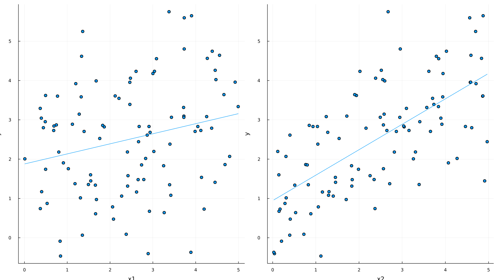
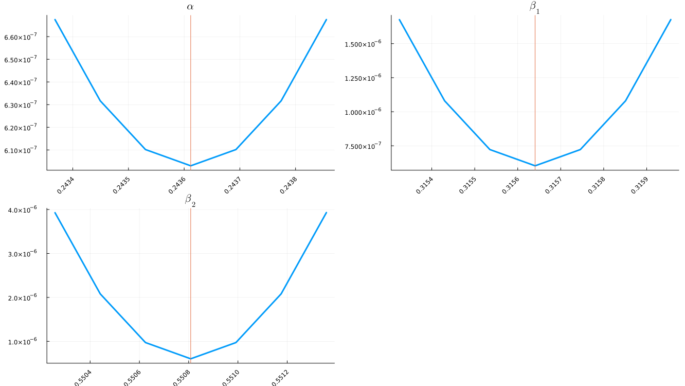

Getting Started
Our goal is to estimate the parameter vector $\theta$ of an economic model by the method of simulated moments. The MSM estimator $\hat{\theta}_{MSM}$ minimizes the weighted distance between the empirical moments and the simulated moments, measured by the objective function $g$:
\[\begin{aligned} \hat{\theta}_{MSM} &= \underset{\theta \in \Theta}{\arg\min} \; g(\theta), \\[4pt] g(\theta) &= \big(m(\theta) - m^{*}\big)^{\top} \, W \, \big(m(\theta) - m^{*}\big), \end{aligned}\]
where $m^{*}$ is the vector of empirical moments, $m(\theta)$ is the vector of moments calculated with data simulated from the model at the parameter values $\theta$, $W$ is a weighting matrix, and $\Theta$ is the set of admissible parameter values. Once we have found $\hat{\theta}_{MSM}$, we also want to build confidence intervals for it.
While this looks like a simple function minimization, many bad things can happen in practice. The function $g$ may: (a) fail in some areas of the parameter space, (b) have several local minima, in which a local optimizer may get stuck, (c) be slow to evaluate and hard to parallelize efficiently. MethodOfSimulatedMoments.jl uses minimization algorithms that are robust to the problems mentioned above. You may choose between two options:
- Global minimization algorithms from BlackBoxOptim
- A multistart algorithm using several local optimization routines from Optim.jl
Let's follow a learning-by-doing approach. As a warm-up, let's first estimate parameters in serial. In a second step, we use several workers on a cluster.
Example in serial
In a real-world scenario, one would use empirical data. Here, let's simulate a fake dataset.
using MethodOfSimulatedMoments
using DataStructures
using OrderedCollections
using Random
using Distributions
using Statistics
using LinearAlgebra
using Distributed
using Plots
Random.seed!(1234) #for replicability reasons
T = 100000 #number of periods
P = 2 #number of explanatory variables
beta0 = rand(P) #choose true coefficients by drawing from a uniform distribution on [0,1]
alpha0 = rand(1)[] #intercept
theta0 = 0.0 #coefficient to create serial correlation in the error terms
# Generation of error terms
# row = individual dimension
# column = time dimension
U = zeros(T)
d = Normal()
U[1] = rand(d, 1)[] #first error term
for t = 2:T
U[t] = rand(d, 1)[] + theta0*U[t-1]
end
# Let's simulate the explanatory variables x_t
x = zeros(T, P)
d = Uniform(0, 5)
for p = 1:P
x[:,p] = rand(d, T)
end
# Let's calculate the resulting y_t
y = zeros(T)
for t=1:T
y[t] = alpha0 + x[t,1]*beta0[1] + x[t,2]*beta0[2] + U[t]
end
# Visualize data
p1 = scatter(x[1:100,1], y[1:100], xlabel = "x1", ylabel = "y", legend=:none, smooth=true)
p2 = scatter(x[1:100,2], y[1:100], xlabel = "x2", ylabel = "y", legend=:none, smooth=true)
p = plot(p1, p2);GKS: cannot open display - headless operation mode active
Step 1. Initializing an MSMProblem
# Select a global optimizer (see BlackBoxOptim.jl) and a local minimizer (see Optim.jl):
myProblem = MSMProblem(options = MSMOptions(maxFuncEvals=10000, globalOptimizer = :dxnes, localOptimizer = :LBFGS));MSMProblem(OrderedDict{String, Vector{Float64}}(), [1.0;;], OrderedDict{String, Vector{Float64}}(), OrderedDict{String, Float64}(), 0.0, MethodOfSimulatedMoments.default_function, MethodOfSimulatedMoments.default_function, MethodOfSimulatedMoments.default_function, MSMOptions(:dxnes, :LBFGS, 10000, "2026-10-07--12h-43m-20s", false, false, 50, 0, Inf, :LHC, false, 20, Inf), nothing, nothing, nothing, Matrix{Float64}(undef, 0, 0), Matrix{Float64}(undef, 0, 0))Step 2. Set empirical moments and weight matrix
Choose the set of empirical moments to match and the weight matrix $W$ using the functions set_empirical_moments! and set_weight_matrix!.
dictEmpiricalMoments = OrderedDict{String,Array{Float64,1}}()
dictEmpiricalMoments["mean"] = [mean(y)] #informative on the intercept
dictEmpiricalMoments["mean_x1y"] = [mean(x[:,1] .* y)] #informative on betas
dictEmpiricalMoments["mean_x2y"] = [mean(x[:,2] .* y)] #informative on betas
dictEmpiricalMoments["mean_x1y^2"] = [mean((x[:,1] .* y).^2)] #informative on betas
dictEmpiricalMoments["mean_x2y^2"] = [mean((x[:,2] .* y).^2)] #informative on betas
W = Matrix(1.0 .* I(length(dictEmpiricalMoments)))#initialization
#Special case: diagonal matrix
#Sum of square percentage deviations from empirical moments
#(you may choose something else)
for (indexMoment, k) in enumerate(keys(dictEmpiricalMoments))
W[indexMoment,indexMoment] = 1.0/(dictEmpiricalMoments[k][1])^2
end
set_empirical_moments!(myProblem, dictEmpiricalMoments)
set_weight_matrix!(myProblem, W)5×5 Matrix{Float64}:
0.172423 0.0 0.0 0.0 0.0
0.0 0.0223442 0.0 0.0 0.0
0.0 0.0 0.0194769 0.0 0.0
0.0 0.0 0.0 0.000155884 0.0
0.0 0.0 0.0 0.0 0.000117392Step 3. Set priors
Our "prior" belief regarding the parameter values is to be specified using set_priors!(). It is not a full-fledged prior probability distribution, but simply an initial guess for each parameter, as well as lower and upper bounds:
dictPriors = OrderedDict{String,Array{Float64,1}}()
# Of the form: [initial_guess, lower_bound, upper_bound]
dictPriors["alpha"] = [0.5, 0.001, 1.0]
dictPriors["beta1"] = [0.5, 0.001, 1.0]
dictPriors["beta2"] = [0.5, 0.001, 1.0]
set_priors!(myProblem, dictPriors)OrderedDict{String, Vector{Float64}} with 3 entries:
"alpha" => [0.5, 0.001, 1.0]
"beta1" => [0.5, 0.001, 1.0]
"beta2" => [0.5, 0.001, 1.0]Step 4. Specifying the function generating simulated moments
The function generating simulated moments must return an ordered dictionary containing the keys of dictEmpiricalMoments. Use set_simulate_empirical_moments! and construct_objective_function!.
Remark: we "freeze" randomness during the minimization step. One way to do that is to generate draws from a Uniform([0,1]) outside of the objective function and to use inverse transform sampling to generate draws from a normal distribution. Otherwise, the objective function would be "noisy" and the minimization algorithms would have a hard time finding the global minimum.
# x[1] corresponds to the intercept; x[2] corresponds to beta1; x[3] corresponds to beta2
function functionLinearModel(x; uniform_draws::Array{Float64,1}, simX::Array{Float64,2}, nbDraws::Int64 = length(uniform_draws), burnInPerc::Int64 = 0)
T = nbDraws
P = 2 #number of explanatory variables
alpha = x[1]
beta = x[2:end]
theta = 0.0 #coefficient to create serial correlation in the error terms
# Creation of error terms
# row = individual dimension
# column = time dimension
U = zeros(T)
d = Normal()
# Inverse cdf (i.e. quantile)
gaussian_draws = quantile.(d, uniform_draws)
U[1] = gaussian_draws[1] #first error term
for t = 2:T
U[t] = gaussian_draws[t] + theta*U[t-1]
end
# Let's calculate the resulting y_t
y = zeros(T)
for t=1:T
y[t] = alpha + simX[t,1]*beta[1] + simX[t,2]*beta[2] + U[t]
end
# Get rid of the burn-in phase:
#------------------------------
startT = max(1, Int(nbDraws * (burnInPerc / 100)))
# Moments:
#---------
output = OrderedDict{String,Float64}()
output["mean"] = mean(y[startT:nbDraws])
output["mean_x1y"] = mean(simX[startT:nbDraws,1] .* y[startT:nbDraws])
output["mean_x2y"] = mean(simX[startT:nbDraws,2] .* y[startT:nbDraws])
output["mean_x1y^2"] = mean((simX[startT:nbDraws,1] .* y[startT:nbDraws]).^2)
output["mean_x2y^2"] = mean((simX[startT:nbDraws,2] .* y[startT:nbDraws]).^2)
return output
end
# Let's freeze the randomness during the minimization
d_Uni = Uniform(0,1)
nbDraws = 100000 #number of draws in the simulated data
uniform_draws = rand(d_Uni, nbDraws)
simX = zeros(length(uniform_draws), 2)
d = Uniform(0, 5)
for p = 1:2
simX[:,p] = rand(d, length(uniform_draws))
end
# Attach the function parameters -> simulated moments:
set_simulate_empirical_moments!(myProblem, x -> functionLinearModel(x, uniform_draws = uniform_draws, simX = simX))
# Construct the objective (m-m*)'W(m-m*):
construct_objective_function!(myProblem)(::MethodOfSimulatedMoments.var"#objective_function_MSM#construct_objective_function!##0"{MSMProblem}) (generic function with 1 method)Step 5. Running the optimization
Use the global optimization algorithm specified in globalOptimizer:
# Global optimization:
msm_optimize!(myProblem, verbose = false)(Any[6.030080036228068e-7], Any[[0.2436117440194673, 0.31564041649741537, 0.5508082362652996]])Step 6. Analyzing the results
Step 6.A. Point estimates
minimizer = msm_minimizer(myProblem)
minimum_val = msm_minimum(myProblem)
println("Minimum objective function = $(minimum_val)")
println("Estimated value for alpha = $(minimizer[1]). True value for alpha = $(alpha0[1])")
println("Estimated value for beta1 = $(minimizer[2]). True value for beta1 = $(beta0[1])")
println("Estimated value for beta2 = $(minimizer[3]). True value for beta2 = $(beta0[2])")Minimum objective function = 6.030080036228068e-7
Estimated value for alpha = 0.2436117440194673. True value for alpha = 0.21858665481883066
Estimated value for beta1 = 0.31564041649741537. True value for beta1 = 0.32597672886359486
Estimated value for beta2 = 0.5508082362652996. True value for beta2 = 0.5490511363155669Step 6.B. Inference
Estimation of $\Sigma_0$
The precision of the estimates depends on $\Sigma_0$, the (long-run) variance-covariance matrix of the empirical moments:
\[\sqrt{T} \, \big(m^{*} - m_0\big) \xrightarrow{d} \mathcal{N}\big(0, \Sigma_0\big),\]
where $T$ is the number of periods in the empirical data and $m_0$ is the true value of the moments. Each empirical moment is an average over periods (for instance, the average of $x_{1t} y_t$), so $\Sigma_0$ can be estimated from the series being averaged. Here, we know that the error terms are not serially correlated (the serial correlation coefficient is set to 0 in the code above), so $\Sigma_0$ is simply the variance-covariance matrix of these series. In the presence of serial correlation, a heteroskedasticity and autocorrelation consistent (HAC) estimator would be needed, such as the Newey-West estimator cov_NW.
# Empirical Series
#-----------------
X = zeros(T, 5)
X[:,1] = y
X[:,2] = (x[:,1] .* y)
X[:,3] = (x[:,2] .* y)
X[:,4] = (x[:,1] .* y).^2
X[:,5] = (x[:,2] .* y).^2
Sigma0 = cov(X)5×5 Matrix{Float64}:
1.84038 6.21563 7.35346 112.463 139.716
6.21563 35.3399 23.179 674.692 471.601
7.35346 23.179 40.9529 456.958 821.615
112.463 674.692 456.958 14771.1 10243.8
139.716 471.601 821.615 10243.8 18700.0Asymptotic variance
Theory
The asymptotic variance of the MSM estimator is given by the usual GMM sandwich formula, multiplied by $(1 + \tau)$ to take into account the noise coming from the simulation:
\[\sqrt{T} \, \big(\hat{\theta}_{MSM} - \theta_0\big) \xrightarrow{d} \mathcal{N}\big(0, V\big), \qquad V = (1 + \tau) \, \big(D^{\top} W D\big)^{-1} D^{\top} W \, \Sigma_0 \, W D \, \big(D^{\top} W D\big)^{-1},\]
where $\theta_0$ is the true value of the parameters, $D = \partial m(\theta) / \partial \theta^{\top}$ is the Jacobian matrix of the simulated moments with respect to the parameters (calculated by finite differences at $\hat{\theta}_{MSM}$, see calculate_D), and $\tau = T / S$ is the ratio of the number of periods in the empirical data, $T$, to the number of periods in the simulated data, $S$. The standard error of the $i$-th parameter is $\sqrt{V_{ii} / T}$.
The factor $(1 + \tau)$ is the cost of simulating the moments instead of calculating them exactly: with $S = T$, as in this example, simulation doubles the asymptotic variance; with a long simulated sample ($S \gg T$), the MSM estimator is almost as precise as the GMM estimator. With the optimal weighting matrix $W = \Sigma_0^{-1}$, the formula simplifies to $V = (1 + \tau) \, \big(D^{\top} \Sigma_0^{-1} D\big)^{-1}$.
This formula applies when the moments are unconditional averages over time, and when the simulated data are drawn independently of the empirical data. See Lee and Ingram (1991), Duffie and Singleton (1993) and Gouriéroux and Monfort (1996) for details.
Practice
Calculating the asymptotic variance using MethodOfSimulatedMoments.jl is done in two steps:
- setting the value of $\Sigma_0$ using the function
set_Sigma0!; - calculating the asymptotic variance $V$ using the function
calculate_Avar!, with $\tau = T / S$.
set_Sigma0!(myProblem, Sigma0)
calculate_Avar!(myProblem, minimizer, tau = T/nbDraws) # nbDraws = number of draws in the simulated data3×3 Symmetric{Float64, Matrix{Float64}}:
33.951 -7.96007 -5.04249
-7.96007 4.249 -0.942198
-5.04249 -0.942198 3.40523Step 6.C. Summarizing the results
Once the asymptotic variance has been calculated, a summary table can be obtained using the function summary_table. This function has four inputs:
- an MSMProblem;
- the minimizer of the objective function;
- the length of the empirical sample, $T$;
- the significance level $\alpha$ of the test H0: $\theta_i = 0$ against H1: $\theta_i \neq 0$ (the confidence intervals have a confidence level of $1 - \alpha$).
df = summary_table(myProblem, minimizer, T, 0.05)─────────────────────────────────────────────────────────────
Coef. Std. Error t Pr(>|t|) CI Lower CI Upper
─────────────────────────────────────────────────────────────
x1 0.243612 0.0184258 13.22 <1e-39 0.207498 0.279726
x2 0.31564 0.00651844 48.42 <1e-99 0.302865 0.328416
x3 0.550808 0.00583543 94.39 <1e-99 0.539371 0.562245
─────────────────────────────────────────────────────────────Step 7. Identification checks and J-test
Local identification requires the Jacobian matrix $D$ of the function $\theta \mapsto m(\theta)$ to have full column rank in a neighborhood of the solution:
D = calculate_D(myProblem, minimizer)
println("number of parameters: $(size(D,2))")
println("rank of D is: $(rank(D))")number of parameters: 3
rank of D is: 3Local identification can also be visually checked by inspecting slices of the objective function in a neighborhood of the estimated value:
vXGrid, vYGrid = msm_slices(myProblem, minimizer, nbPoints = 7);
using LaTeXStrings;
p1 = plot(vXGrid[:, 1],vYGrid[:, 1],title = L"\alpha", label = "",linewidth = 3, xrotation = 45);
plot!(p1, [minimizer[1]], seriestype = :vline, label = "",linewidth = 1);
p2 = plot(vXGrid[:, 2],vYGrid[:, 2],title = L"\beta_1", label = "",linewidth = 3, xrotation = 45);
plot!(p2, [minimizer[2]], seriestype = :vline, label = "",linewidth = 1);
p3 = plot(vXGrid[:, 3],vYGrid[:, 3],title = L"\beta_2", label = "",linewidth = 3, xrotation = 45);
plot!(p3, [minimizer[3]], seriestype = :vline, label = "",linewidth = 1);
plot_combined = plot(p1, p2, p3);[ Info: slicing along alpha
[ Info: slicing along beta1
[ Info: slicing along beta2
J-test of the over-identifying restrictions
With more moments ($k = 5$) than parameters ($p = 3$), the model is over-identified, and we can test whether all the moments are matched, up to sampling and simulation noise. Under the null hypothesis that the model is correctly specified, the J statistic follows a chi-squared distribution with $k - p$ degrees of freedom:
\[J = \frac{T}{1 + \tau} \, \big(m(\hat{\theta}_{MSM}) - m^{*}\big)^{\top} \, \Sigma_0^{-1} \, \big(m(\hat{\theta}_{MSM}) - m^{*}\big) \xrightarrow{d} \chi^2(k - p),\]
where the factor $1 / (1 + \tau)$ accounts for the simulation noise (Lee and Ingram, 1991). This result requires the optimal weighting matrix $W = \Sigma_0^{-1}$, which is not the matrix used so far. We therefore estimate the parameters again with $W = \Sigma_0^{-1}$, starting from the previous estimate (the usual two-step procedure), and then use the function J_test. Its inputs are the MSMProblem, the estimate, the number of periods in the empirical data $T$ and in the simulated data $S$, and the significance level of the test. It returns the J statistic and the critical value above which the model is rejected:
# Second step: optimal weighting matrix, and a local minimization from the first-step estimate
set_weight_matrix!(myProblem, inv(Sigma0))
construct_objective_function!(myProblem)
msm_refine_globalmin!(myProblem, verbose = false)
minimizer_optimal = msm_local_minimizer(myProblem)
J, criticalValue = J_test(myProblem, minimizer_optimal, T, nbDraws, 0.05)
println("Estimates with the optimal weighting matrix = $(minimizer_optimal)")
println("J statistic = $(J). Critical value at 5% = $(criticalValue)")
println("The model is $(J > criticalValue ? "rejected" : "not rejected") at the 5% level")Estimates with the optimal weighting matrix = [0.24221135187823029, 0.31636377461393195, 0.5495085146856451]
J statistic = 0.5100275982902504. Critical value at 5% = 5.99146454710798
The model is not rejected at the 5% levelExample in parallel
To use the package on a cluster, one must make sure that empirical moments, priors and the weight matrix are defined for each worker. This can be done using @everywhere begin end blocks, or by using ParallelDataTransfer.jl. The function returning simulated moments must also be defined @everywhere. See the file LinearModelCluster.jl for details.
Option 1: Global parallel optimization
Choose a global optimizer that supports parallel evaluations: the natural evolution strategies :dxnes (the default), :xnes and :separable_nes. See the documentation for BlackBoxOptim.jl.
These methods evaluate lambda points per generation, in parallel, and start the next generation when all of them are done. By default (MSMOptions(lambda = 0)), lambda is BlackBoxOptim's default for the number of parameters, rounded up to a multiple of nworkers(), so that no worker is idle (see nes_lambda). With verbose = true, msm_optimize! logs the value used, and the number of generations it implies. maxFuncEvals counts evaluations: with more workers, lambda is larger and there are fewer generations for the same maxFuncEvals, so scale maxFuncEvals with lambda (about lambda times the number of generations you want).
Differential evolution (e.g. :adaptive_de_rand_1_bin_radiuslimited) evaluates about one new point at a time: it gets essentially no speed-up from several workers. populationSize only applies to differential evolution.
msm_optimize!(myProblem, verbose = false)
minimizer = msm_minimizer(myProblem)
minimum_val = msm_minimum(myProblem)1.0200551965796485e-5Option 2: Multistart algorithm
The function msm_multistart! proceeds in two steps:
- It searches for starting values for which the model converges.
- Several local optimization algorithms (specified with
localOptimizer) are started in parallel using promising starting values from step 1.
The "global" minimum is the minimum of the local minima:
msm_multistart!(myProblem, nums = nworkers(), verbose = false)
minimizer_multistart = msm_multistart_minimizer(myProblem)
minimum_multistart = msm_multistart_minimum(myProblem)1.0200551965808132e-5